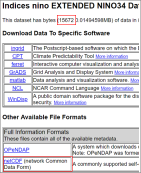

10 Gridded Data
10.1 Introduction
There are various sources of gridded data for climatic elements. Those considered here are from the European Organisation for the Exploitation of Meteorological Satellites, Satellite Application Facility on Climate Monitoring (EUMETSAT CM SAF), the Copernicus Climate Change Service (C3S) Climate Data Store and the International Research Institute for Climate and Society (IRI) Data Store.
All data are freely available. You need to register to access data from CM SAF, and also for the C3S Climate Data Store. The IRI Data Store does not require registration. The CM SAF data considered here are from stationary satellites and are available for all of Europe and Africa and possibly more, e.g. Middle East and Caribbean. Sunshine and radiation data are illustrated here. They are available daily (some hourly) on a grid of about 4km and are from 1983. Other elements, e.g. ground temperature are available hourly, from the early 1990s. They will later become available from the 1980s.
We consider the ERA5 reanalysis data from the C3S Climate Data Store. ERA5 is global, from 1979 (soon to be 1950) with a large number of elements available hourly on a grid of 0.25 by 0.25 degrees (about 30km). It is illustrated with precipitation (hourly) and with 2m temperature (used to derive daily Tmax and Tmin).
The IRI Data Store is a repository of climate data from a wide variety of sources. We illustrate the IRI Data Store by accessing daily precipitation estimates from CHIRPS and ENSO and sea-surface temperatures, that are commonly used for seasonal forecasting.
There are many possible uses and applications of these data. To be continued – with examples of what can be done and is being done.
10.2 Importing NetCDF files
Show how to use the dialog first without changing options but still look at details to check what is being imported.
Then show the options for sub-areas, an individual station, or for multiple stations. Can use Rwanda station locations and CHIRPS data from IRI section.
10.3 EUMETSAT CM SAF
The CM SAF website is shown in Fig. 9.2a. You are invited to sign-in or register, though you are welcome to explore what is available without this. You need to register to download any data. You are then able to use these data freely. EUMETSAT would very much welcome any feedback on how the data have been used, particularly if, for example, you have compared your station data with their data. They may sometimes be prepared to assist you with using the data. You can contact EUMETSAT through their User Help Desk https://www.cmsaf.eu/EN/Service/UHD/UHD_node.html.
| Fig. 9.2a |
|---|
Choose Surface Radiation products from the Climate Data Records menu in Fig. 9.2a. Choose daily sunshine duration, SDU, Fig. 9.2b.
From Fig. 9.2c we see the data are available from 1 January 1983 to the end of December 2017 (when this guide was written). There are other products from EUMETSAT CM SAF if more recent data are required, but they have not been through the homogenisation and quality control checks.
| Fig 9.2b | Fig. 9.2c |
|---|---|
Also indicated in Fig. 9.2c is that there is documentation on each product. Consider downloading these guides if you decide to use the data as they are very detailed and informative.
On the same screen as Fig. 9.2c you see an Add to Order Cart invitation. Ignore this for now, unless you want a huge file, with data from about half the globe.
Instead, scroll further down and click on the button that says Change Projection / spatial resolution / domain.
| Fig. 9.2d | Fig. 9.2e |
|---|---|
If you are following this as an exercise, then change the coordinates in Fig. 9.2e.
Click, in Fig. 9.2e to proceed to the time range selection.
| Fig. 9.2f | Fig. 9.2g |
|---|---|
In the following screen, scroll down to confirm that the sub-domain, part of Rwanda, has been included, Fig. 9.2f. Then press Add to Order Cart, Fig. 9.2g.
You return to the screen in Fig. 9.2h. It is disconcerting that in Fig. 9.2h it appears you are about to order a file of over 200 gigabytes, but it is the size ignoring the sub-domain[^46]. Keep your nerve and place the order, Fig. 9.2h.
| Fig.9.2h |
|---|
You receive a confirmatory e-mail that the order has been placed on the EUMETSAT server. Shortly afterwards there is confirmation that the data have been extracted and are waiting to be downloaded, Fig. 9.2i
| Fig. 9.2i |
|---|
Follow the instructions in your equivalent of the message in Fig. 9.2i to download the file. It is now, for the first time that you are made aware of the file size, 341 Mbytes for this example.
This downloads a single tar file, containing 12 thousand individual NetCDF files, with one file for each day.
This is continued, in Section 9.5, through the CM SAF toolbox and in Section xxx using R-Instat.
10.4 C3S Climate Data Store
If you are not online, then the first part of this section is again for reading only.
The website is https://cds.climate.copernicus.eu/. This takes you to the screen partly shown in Fig. 9.3a. You are invited to login or register your account. So, do this.
Once logged in you return to the screen in Fig. 9.3a.
| Fig. 9.3a |
|---|
Then click on Datasets in Fig. 9.3a to give the screen starting in Fig. 9.3b. There are many different datasets available. In the search bar type “ERA5 hourly” and from the results select, “ERA5 hourly data on single levels”.
Click on this dataset to get further information, see Fig. 9.3c.
| Fig. 9.3b | Fig. 9.3c |
|---|---|
 |
The data are currently from 1979 (soon to be from 1950). They are available for many elements including precipitation, temperature, evaporation, radiation and wind speed and direction.
They are hourly data and at a 0.25 by 0.25-degree (about 25km) resolution.
| Fig. 9.3d | Fig. 9.3e |
|---|---|
On your first visit to the site, continue, and click on Download data in Fig. 9.3c. You then choose one or more elements, Fig. 9.3d and decide on the years, months, days and hours to include. Finally, select the sub-region to extract in the Geographical area section, Fig. 9.3f. Once the items in Fig. 9.3d, Fig. 9.3e and Fig. 9.3f are complete you can click Submit Form to start the request.
The running may take minutes (sometimes many) to complete. It also sometimes fails. You can view the current status of your requests by clicking Your requests from the menu bar shown in Fig. 9.3a. Occasionally there is a single error 500, in which case just run again. The other common error is that you have asked for too much data. If you are requesting a complete time series i.e. for all hours, days, and months, then the current limit appears to be approximately 5 years. This limit seems to be the same, irrespective of the area. Hence, for 30 years, make 6 separate requests, changing the years for each run. You do not need to wait for a request to complete before starting another one. Go to Your requests to see the status of each and download the data once complete.
| Fig. 9.3f Generate a toolbox request | Fig. 9.3g Names for each element |
|---|---|
An alternative way to request data is through the Toolbox, shown in the menu bar of the homepage in Fig. 9.3a. Previously, it was not possible to select a sub-region through the interface described above, hence it was necessary to construct a Python script to run the Toolbox in order to do this. However, now that sub-region extraction is possible in the interface, we suggest it is sufficient to use the interface if your main interest is to download data for use in another software e.g. R or R-Instat.
An example Toolbox script to download hourly 2-metre temperature data for sub-region covering in Rwanda for 5 years in shown Fig. 9.3i. The Toolbox also includes functionality for processing, analysing and displaying data, however this is not covered here as we will demonstrate importing ERA5 data into R-Instat.
| Fig. 9.3h Sample toolbox code |
|---|
import cdstoolbox as ct @ct.application(title='Retrieve Data') @ct.output.dataarray() def retrieve_sample_data(): """ Application main steps: - retrieve 2m temperature of ERA5 from CDS Catalogue - specify the grid - year(s) - month(s) - day(s) - hour(s) - area is optional give N/W/S/E corners - recommended for local analysis - ask for netcdf format """ data = ct.catalogue.retrieve( 'reanalysis-era5-single-levels', { 'variable': '2m_temperature', 'grid': ['0.25', '0.25'], 'product_type': 'reanalysis', 'year': [ '1981',‘1982’,‘1983’,‘1984’,‘1985’ ], 'month': [ '01', '02', '03', '04', '05', '06','07', '08', '09', '10', '11', '12', ], 'day': [ '01', '02', '03', '04', '05', '06','07', '08', '09', '10', '11', '12', '13', '14', '15', '16', '17', '18','19', '20', '21', '22', '23', '24', '25', '26', '27', '28', '29', '30','31' ], 'time': [ '00:00','01:00','02:00','03:00','04:00','05:00', '06:00','07:00','08:00','09:00','10:00','11:00', '12:00','13:00','14:00','15:00','16:00','17:00', '18:00','19:00','20:00','21:00','22:00','23:00' ], 'area': ['-1.5/30/-2.0/30.54'], 'format' : ['netcdf'] }) return data |
The second stage is to read the resulting data into R-Instat. For those who were not online, the six files have also been renamed and copied into the R-Instat library.
Go into R-Instat and use File > Open and Tidy NetCDF File Fig. 9.3i.
| Fig. 9.3i Loading the data for 1981-5 | Fig. 9.3j Six files in R-Instat |
|---|---|
In Fig. 9.3j, if you downloaded your own data, then choose Browse, otherwise choose From Library and use the file called cds.Rwanda_1981_5.nc.
Then recall the last dialogue and include the other five files, up to cds.Rwanda_2005_10. The resulting data are shown in Fig. 9.3k. There are about 394,416 rows of data in each file (i.e. roughly 9 * 24 * 365 * 5)
The next step is to append the files to give the 30-year record. Use Climatic >Tidy and Examine > Append, Fig. 9.3l. In Fig. 9.3k, include all 6 data frame, then the ID column isn’t needed and the resulting data frame is named better than Append1.
| Fig. 9.3k Appending the 6 data frames | Fig. 9.3l Temperatures into centigrade |
|---|---|
The data column in Fig. 9.3k, called tas, is in degrees Kelvin. Use Climatic > Prepare > Transform to change them into centigrade for comparison with the station data, Fig. 9.3m.
ECMWF provides the time variable always in GMT (Greenwich Mean Time). Rwanda is 2 hours ahead, so either, or both, the time variables in Fig. 9.3k need to be moved forward by 2 hours. To make this change the data should first be in “station” order. Hence first Right-Click and choose Sort (or use Prepare > Data Frame > Sort) to produce the dialogue in Fig. 9.3m.
Now use Prepare > Column: Calculate > Calculations as shown in Fig. 9.3n. In the calculator the Transform keyboard includes the lead function. The function, from the dplyr package is:
dplyr::lead(time_full,2), to move to Rwanda time. Pressing the Try button in Fig. 9.3n shows the first value is now 2am GMT[^47].
| Fig. 9.3m | Fig. 9.3n |
|---|---|
Now use Climatic > Dates > Make Date to make a new Date column from the Rwanda hourly column, Fig. 9.3o.
| Fig. 9.3o | Fig. 9.3p |
|---|---|
 |
Finally generate Tmax and Tmin, on a daily basis, from the hourly values, ready to use, or to compare with station data. First right-click and make the lon and lat columns into factors. The hourly data are now roughly as in Fig. 9.3p
Complete the Prepare > Column: Reshape > Column Summaries dialogue as shown in Fig. 9.3q. As these are temperatures the daily maximum and minimum are calculated. The resulting worksheet, Fig. 9.3r, has a more reasonable 100,000 rows of data at the 9 gridpoints.
| Fig. 9.3q | Fig. 9.3r Resulting daily data |
|---|---|
10.5 The IRI Data Store
A third source of gridded data considered here is the IRI Data Library. IRI is the International Research Institute for Climate and Society based in Colombia University, USA. The website for their data library is http://iridl.ldeo.columbia.edu/ , Fig. 9.4a. The IRI Data Store is a large repository of climate data from a wide variety of sources. In many cases, the IRI Data Store is not the only, or primary, source of the data, however the IRI Data Store provides a simple consistent way of freely downloading from a large set of sources, and crucially allows for selecting sub-regions.
As well as downloading from the website, R-Instat includes a dialog to directly download and import some of the common data from the IRI Data Store. We demonstrate both methods here, using the R-Instat dialog to download CHIRPS daily rainfall estimates and the IRI Data Store website to download information on ENSO and sea surface temperatures.
10.5.1 Downloading directly from R-Instat
Climate Hazards Group InfraRed Precipitation with Station data (CHIRPS), produced by Climate Hazards Center UC Santa Barbara, USA, is a near-global gridded rainfall data set, available from 1981 to near-present with a spatial resolution of 0.05°. It is constructed by combining satellite imagery and in-situ station data, and is available on a daily, dekad and monthly basis. It’s website is here https://www.chc.ucsb.edu/data/chirps but the data is more easily available to download and subset from the IRI Data Store. It is an example of one of the datasets available to download directly from R-Instat.
In R-Instat go to Climatic > File > Import from IRI Data Library, fig xxx. First select “UCSB CHIRPS” as the Source. We will download the daily data with the highest resolution available, hence choose “Daily Precipitation 0.05 degree” as the Data, fig xxx. Source shows a limited set of data sources available in the IRI Data Store which we think will be most commonly used by R-Instat users. If there is a dataset from the IRI Data Store that you commonly use and think we should add, please let us know and we can consider adding it to the dialog.
The next two sections of the dialog allow for choosing a subset of time or location. By default, “Entire Range” is selected for the data range. For CHIRPS, this means 1981 to near-present. We will use this option, but if you want a shorter time period choose “Custom Range” and select the “From” and “To” dates. The Location Range allows you to choose an area defined by longitude and latitude limits, or a single point, which will extract the nearest grid point to the location you provide. Let’s first choose a single point for Kigali, Rwanda at longitude 30.1 and latitude -1.95, fig xxx.
The dialog will connect to the IRI Data Library and download the requested data to your machine as a NetCDF file (.nc), a common format for gridded data (CM SAF and C3S Climate Data Store data are also provided in this format). Click Browse to choose where the download data will be saved to or accept the default of your Documents folder. Choose an appropriate name for the new data frame. Now, click Ok to download and import the data into R-Instat. It may take some time for the request to be processed (up to 30 minutes), particularly for requests that are for a long time period since data are usually stored in separate files for each time point. However, this does not mean the download will be a large file and the time can vary depending on how busy the IRI Data Library servers are. While waiting, you will see the R-Instat waiting dialog and the download progress bar. Do not worry if the progress bar does not move forward, this just means the request is still being processed. Once the request has been processed, the download will usually be small and take very little time. For example, this request should result in a download file of size ~0.1MB.
After finishing you will see the data imported into R-Instat, fig xxx. The NetCDF file has been downloaded to the location chosen on the dialog (Documents by default) and the file has been imported into a data frame in R-Instat. The data frame has five columns. X and Y are the location and this should be constant since we requested a single point. Notice that the value in Y is not exactly what we request. It is -1.97 and we request -1.95. This is because the closed grid point in the CHIRPS data grid to the provided location is selected. .T is time as a number and T_date is a more useful column that is created by R-Instat when importing as a Date column. prcp is precipitation. We can confirm this by looking at the column metadata: View > Column Metadata. Scroll to the end to see the “standard_name” and “units” columns which confirm what each column represents and its units, fig xxx. Click View > Column Metadata again to close the metadata. We can see that each row in the data represents a single day, starting on 1981-01-01. Use Describe > One Variable > Summaries, and select all columns to see a summary of the data. The output is shown in fig xxx. We see that X and Y are constant, as expected. .T is numeric and not that useful, but T_date show the data ranges from 1981-01-01 to 2020-08-31 (as of October 2020, usually 1 or 2 months behind the current date). prcp shows a sensible set of summaries for daily rainfall values. This is useful to do to confirm that the request is as you expected. For example, if X and Y are not constant but you wanted just a single point, then you may not have done the request correctly.
Notice that the data file is also stored on your machine in the folder you chose. For example, in Documents my file is called ucsb_chirps7f14482329.nc. If you need to import this data again, you can now use the file directly, without requesting it again from the IRI Data Store. See section xxx on how to import NetCDF files.
This data is useful for comparison with a single station in Kigali. We often have data from multiple stations and would wish to extract gridded data at each of the station locations. One way to do this would be to make separate requests for each station location using the Import from IRI Data Library multiple times. However, this becomes time consuming for many stations, particularly if the processing time is slow. Another option is to do a single request and download data for an area that covers all the station locations and then afterwards extract the data for the required locations.
So let’s to this by download the same data for an area that covers Rwanda instead of a single point. This will be a larger download file ~280MB but should not take much longer to process. If you have an internet connection able to download ~300MB of data then try the next steps below. If not, then this is just for reading.
Go back to the Import from IRI Data Library dialog. The Source, Data and Date Range options remain the same. Change the Location Range option from “Point” to “Area” and enter the values: longitude: min 28.5, max 30.5, latitude: min -2.5, max -1.4. This area covers the four stations in Rwanda found in the R-Instat Library. Choose the location to save the download or use the same location. Now, the data request is for approximately a 2 degrees by 1 degree area, which will give approximately (2 / 0.05) x (1 / 0.05) = 40 x 20 = 800 grid points, since the resolution is 0.05 degrees. We do not want to directly import all 800 grid points into R-Instat as this would be equivalent to 800 station records for 40 years. Instead, we want to download the data and then extract only a few grid points of interest afterwards. So we will check the option for “Don’t import data after downloading”. This removes the new data frame name as it will not import into R-Instat but will just download to your machine. Now click Ok and it may take a similar amount of time to complete.
After finishing you will not see any change in R-Instat but the file will be downloaded to the chosen folder. We can now use the dialog at Climatic > File > Import & Tidy NetCDF to import a subset of the grid points based on station locations. This is shown in section xxx.
10.5.2 Download from the IRI Data Store
As examples, information on ENSO and sea surface temperatures are accessed. The maproom also contains instructional information, so typing ENSO into the search, Fig. 9.4a, provides useful information, including the areas of the Pacific ocean associated with the NINO situations, Fig. 9.4b. Fig. 9.4b is accessed directly from https://iridl.ldeo.columbia.edu/maproom/ENSO/Diagnostics.html
| Fig.9.4a IRI Data Library | Fig. 9.4b NINO3.4 |
|---|---|
In Fig. 9.4a click on Data by Category, then on Climate Indices, Fig. 9.4c and choose Indices nino EXTENDED, Fig. 9.4d.
| Fig. 9.4c ** | Fig. 9.4d** |
|---|---|
Choose nino34, in Fig. 9.4e and then go straight to data files. The next screen shows a variety of output formats, including NetCDF, which you choose.
| Fig. 9.4e | Fig. 9.4f |
|---|---|
|  |
Now, in R-Instat, use File > Open and Tidy NetCDF File. If you followed the screens above, then browse for the file that was downloaded. Otherwise there is a copy in the R-Instat library to March 2019, Fig. 9.4g.
| Fig. 9.4g | Fig. 9.4h |
|---|---|
The data are now imported into R-Instat, Fig. 9.4h. The time variable has not been recognised as a date. You may wish to click on the I (for information – the metadata) and this will confirm that the column, called T, is months since January 1960. If the fact that some values appear the same in this column, then change the number of significant figures in that column, from 3 to 5.
The first value of T, in Fig. 9.4h is -1248. Dividing by 12 gives 104 years, so the data start in January 1856!
Use Climatic > Dates > Generate Dates, Fig. 9.4i. In Fig. 9.4i, change the starting date to January 1856, the end date to March 2019 (if using the library dataset), and the step to 1 Month. The resulting date column is shown in Fig. 9.4j.
| Fig. 9.4i | Fig. 9.4j |
|---|---|
Countries have their own definition of when the NINO3.4 implies a year, or season is El Niño, or La Niña, see https://en.wikipedia.org/wiki/El_Ni%C3%B1o, some use the NINO3.4 value and others use NINo3, or even NINO1 and 2. The site http://www.bom.gov.au/climate/enso/enlist/index.shtml gives a detailed description of El Niño events since 1900, Fig. 9.4k, with a companion page for La Niña.
| Fig. 9.4k | Fig. 9.4l |
|---|---|
The SSTs themselves are often used for seasonal forecasting. This is illustrated with the SSTs for the Nino3.4 region.
Return to the main page, Fig. 9.4a, then choose Data by Category again, but this time, in Fig. 9.4c, choose Air-Sea Interface. In the resulting screen, choose the NOAA NCDC ERSST version5, Fig. 9.4l.
In the resulting screen, Fig. 9.4m, choose anomalies and then Data Selection.
| Fig. 9.4m | Fig. 9.4n |
|---|---|
Set the time, attitude and longitude as shown in Fig. 9.4n and then Restrict Ranges. The part at the top of Fig. 9.4n should change accordingly and you now press Stop Selecting.
Fig. 9.4m now has the three ranges added, in blue, Fig. 9.4o. Click on Data Files to give the same as Fig. 9.4f, earlier. Choose the NetCDF option again to download the file.
| Fig. 9.4o | Fig. 9.4p |
|---|---|
Use the File > Input and Tidy NetCDF File as in Fig. 9.4g. Then use the Climatic > Dates > Generate Dates dialogue as shown in Fig. 9.4p. In Fig. 9.4p, remember to change to the new data frame. Then set the starting date to January 1921 and there are now 130 values (26 E-W, by 5 N-S) at each time point.
In Fig. 9.4p, if all is correct, the generated sequence should match the length of the data frame. Once accepted, the resulting data frame is shown in Fig. 9.4q. Here each pixel is a 2 degree square, so the first row is the temperature anomaly round 120°W and 4°S for January 1921.
| Fig. 9.4q |
|---|
10.6 Using the CM SAF toolbox for NetCDF files
The CM SAF toolbox is an R software package designed to process the NetCDF files downloaded from EUMETSAT, Section 9.3. It is used on the downloaded files from EUMETSAT (or from other organisations who have NetCDF files). This may be all you need, if your interest is in some products from the EUMETSAT data. Or it may be before using R-Instat if your interest is in comparing station and satellite data.
10.7 Defining ENSO
See https://www.ncdc.noaa.gov/teleconnections/enso/indicators/sst/
Warm and cold phases are defined as a minimum of five consecutive 3-month running mean of SST anomalies (ERSST.v5) in the Niño 3.4 region surpassing a threshold of +/- 0.5°C